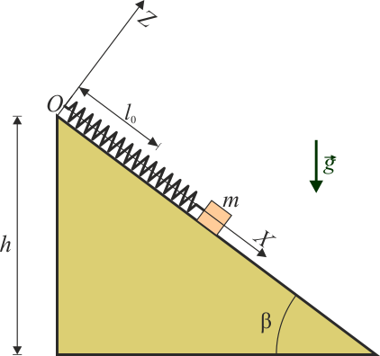
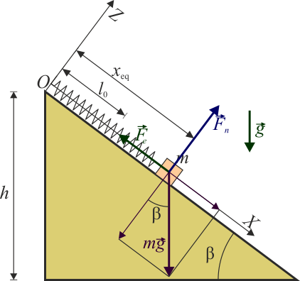
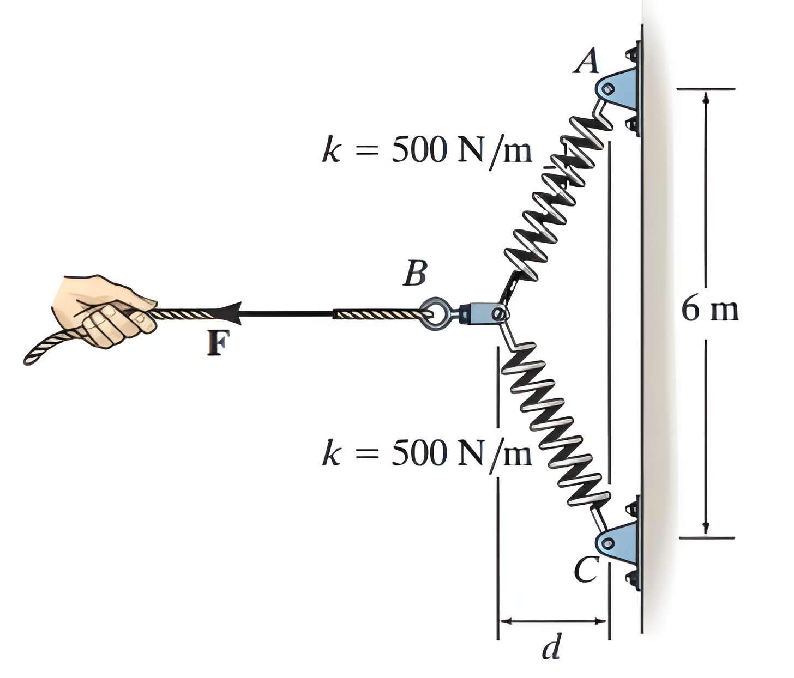
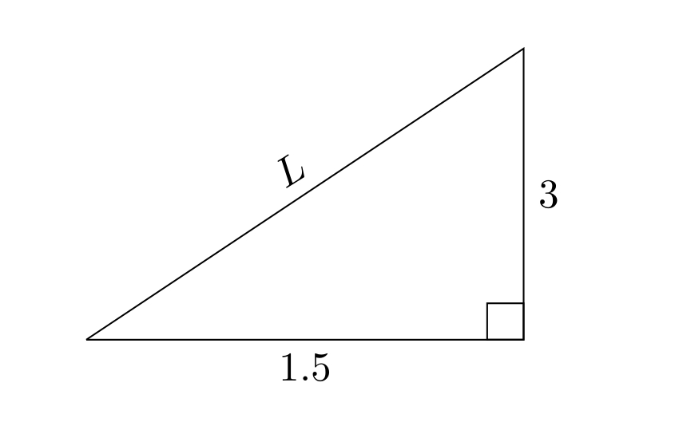
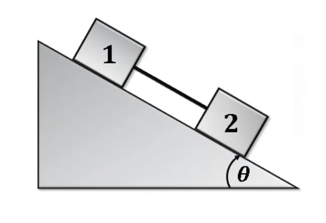
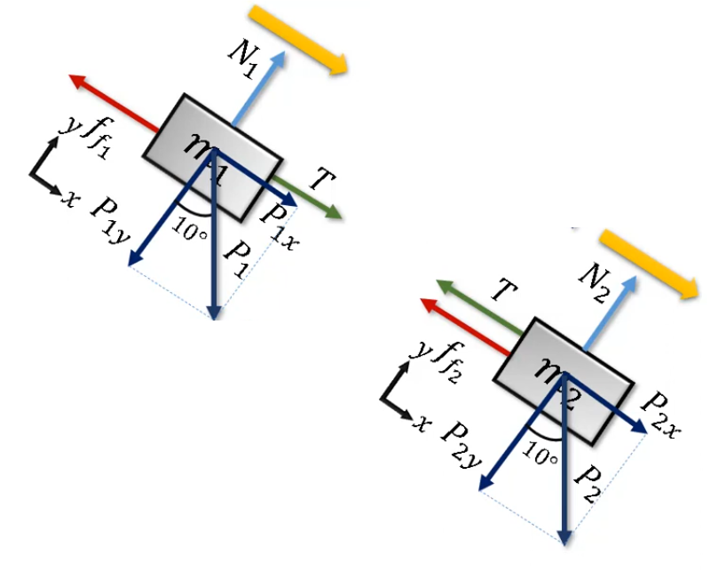
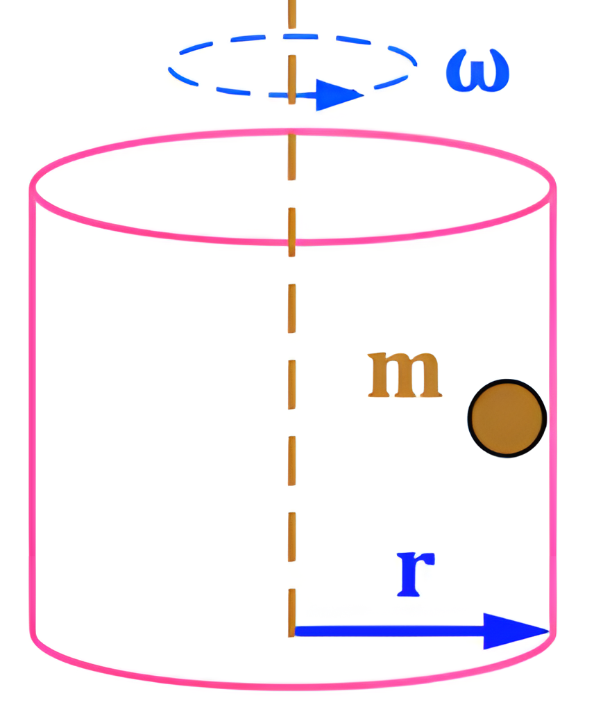
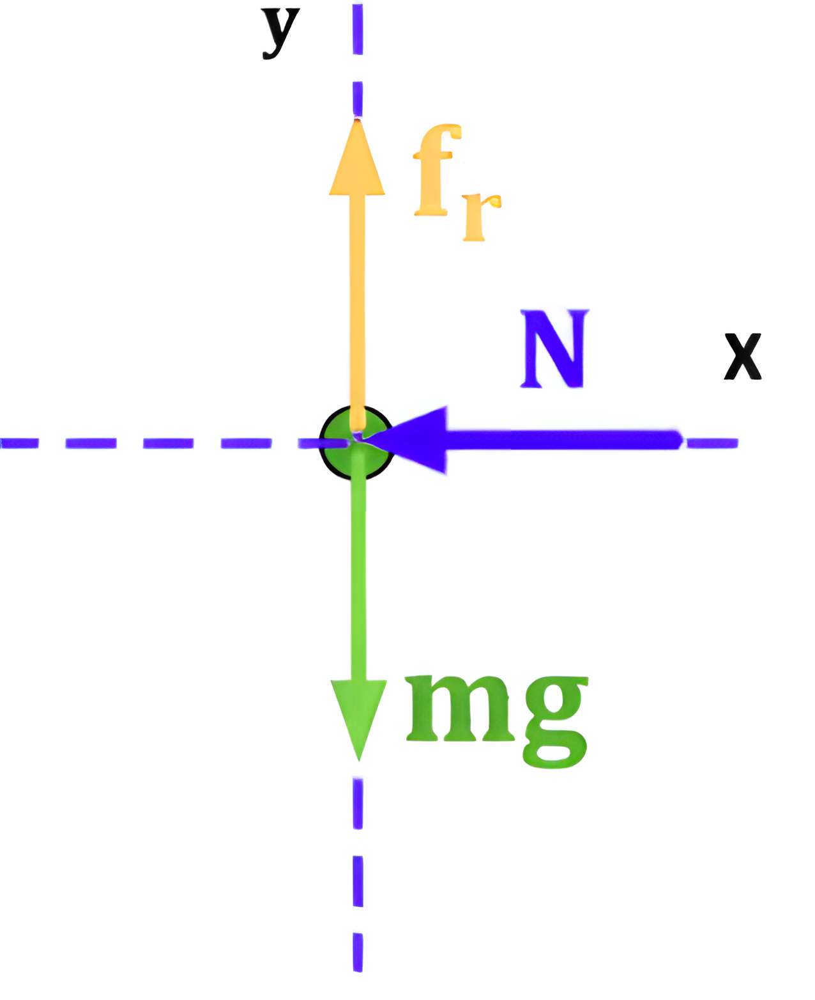

Repaso Prueba 2: Dinámica y Fuerzas elásticas
Ejercicio 1
Un bloque de peso 40 N, se encuentra sobre un plano inclinado en un ángulo \(\beta = 37\degree\), con respecto a la horizontal. El bloque se encuentra atado a un punto superior del plano por un resorte de constante k = 30 N/m, y de longitud natural de lo = 20 cm. Para hacer el estudio se considera el sistema de ejes indicado en la figura. Determine la distancia l, a la cual la masa queda en equilibrio.


Descomponemos la fuerza peso: \[ P = mg = 40 N \] \[ P_x = P \cdot \sin(\beta) = 40 N \cdot \sin(37\degree) = 24 N \] \[ P_y = P \cdot \cos(\beta) = 40 N \cdot \cos(37\degree) = 32 N \]
La fuerza de un resorte está dada por la ley de Hooke: \[ F = k \cdot \Delta l \] \[ \Delta l = l - l_0 \] \[ F = k \cdot (l - l_0) \]
Descomponemos las fuerzas en el eje x y en el eje y. \[ \sum F_x = 0 \Rightarrow -k(l - l_0) + P_x = 0 \] \[ \sum F_y = 0 \Rightarrow N - P_y = 0 \]
Nos piden la distancia l, a la cual la masa queda en equilibrio. Para eso, despejamos l de la ecuación de la fuerza del resorte. \[ \sum F_x = 0 \Rightarrow -k(l - l_0) + P_x = 0 \] \[ k(l - l_0) = P_x \] \[ l - l_0 = \frac{P_x}{k} \] \[ l = \frac{P_x}{k} + l_0 \] Reemplazamos los valores: \[ l = \frac{24 N}{30 N/m} + 20 cm \] \[ l = 0.8 m + 0.2 m \] \[ l = 1.0 m \]
Ejercicio 2
Cada uno de los resortes BA y BC tienen una constante de rigidez de k = 500N/m y una longitud sin estirar igual a 3 m. Determine la fuerza horizontal F aplicada a la cuerda que está unida al pequeño aro B, de modo que el desplazamiento desde la pared es de d = 1,5 m.

Diagrama de cuerpo libre
Para saber la fuerza horizontal F, debemos analizar el sistema de resortes. Para eso, debemos saber la fuerza ejercida por cada resorte. La fuerza de un resorte está dada por la ley de Hooke: \[ F = k \cdot \Delta l \]
Sabemos que la longitud sin estirar de los resortes es de 3 m, y que el desplazamiento desde la pared es de d = 1,5 m. Con esto podemos armar un triángulo rectángulo, donde la hipotenusa es la longitud del resorte, y los catetos son la distancia d y la altura h. Entonces, podemos usar el teorema de Pitágoras para encontrar la altura h.

\[ L^2 = 1.5^2 + 3^2 \] \[ L^2 = 2.25 + 9 \] \[ L^2 = 11.25 \] \[ L = \sqrt{11.25} \]
Con esto, podemos encontrar la fuerza ejercida por cada resorte. \[ F_{BA} = k \cdot \Delta l_{BA} \] \[ \Delta l_{BA} = L - 3 \] \[ \Delta l_{BA} = \sqrt{11.25} - 3 \] \[ \Delta l_{BA} = 0.35 m \] \[ F_{BA} = 500 N/m \cdot 0.35 m \] \[ F_{BA} = 175 N \]
La misma lógica se aplica para el resorte BC. \[ F_{BC} = k \cdot \Delta l_{BC} \] \[ \Delta l_{BC} = L - 3 \] \[ \Delta l_{BC} = \sqrt{11.25} - 3 \] \[ \Delta l_{BC} = 0.35 m \] \[ F_{BC} = 500 N/m \cdot 0.35 m \] \[ F_{BC} = 175 N \]
Ahora, para encontrar la fuerza horizontal F, debemos sumar las fuerzas ejercidas por los resortes BA y BC en el eje x (\(y\) no es necesario). \[ \sum F_x = -F + F_{BA} \cdot \cos(\theta) + F_{BC} \cdot \cos(\theta) = 0 \] Pero recordemos que \[ \cos(\theta) = \frac{d}{L} \] \[ \sum F_x = -F + F_{BA} \cdot \frac{d}{L} + F_{BC} \cdot \frac{d}{L} = 0 \] \[ F = F_{BA} \cdot \frac{d}{L} + F_{BC} \cdot \frac{d}{L} \] \[ F = (175 N + 175 N) \cdot \frac{1.5 m}{\sqrt{11.25}} \] \[ F = 350 N \cdot \frac{1.5 m}{\sqrt{11.25}} \]
\[ F = 350 N \cdot 0.45 \] \[ F = 157.5 N \]
Ejercicio 3
Dos bloques unidos por una cuerda se deslizan hacia abajo una pendiente El bloque 1 tiene masa \(m_1 = 0,8\) kg y el bloque 2 tiene masa \(m_2 = 0,25\) kg. Además, los coeficientes cinéticos de fricción entre los bloques y la inclinación son \(μ_{ k1 } = 0,30\) para el bloque 1 y \(μ_{ k2 } = 0, 20\) para el bloque 2. Encuentre:
- El módulo y dirección de la aceleración de los bloques.
- La tensión de la cuerda.

Diagrama de cuerpo libre

Descomponemos la fuerza peso de la primera masa: \[ P_1 = m_1 \cdot g = 0.8 kg \cdot 9.81 m/s^2 = 7.848 N \] \[ P_{1x} = P_1 \cdot \sin(\theta) = 7.848 N \cdot \sin(10\degree) = 1.36 N \] \[ P_{1y} = P_1 \cdot \cos(\theta) = 7.848 N \cdot \cos(10\degree) = 7.73 N \]
Y la segunda: \[ P_2 = m_2 \cdot g = 0.25 kg \cdot 9.81 m/s^2 = 2.4525 N \] \[ P_{2x} = P_2 \cdot \sin(\theta) = 2.4525 N \cdot \sin(10\degree) = 0.43 N \] \[ P_{2y} = P_2 \cdot \cos(\theta) = 2.4525 N \cdot \cos(10\degree) = 2.42 N \]
Hacemos la sumatoria de fuerzas en el eje x y en el eje y de la masa 1: \[ \sum F_{1x} = P_{1x} + T - F_{r1} = m_1 \cdot a \] \[ \sum F_{1y} = N_1 - P_{1y} = 0 \]
Y para la masa 2: \[ \sum F_{2x} = P_{2x} - T - F_{r2} = m_2 \cdot a \] \[ \sum F_{2y} = N_2 - P_{2y} = 0 \]
Dado que son el mismo sistema, podemos sumar las ecuaciones de la masa 1 y la masa 2: \[ \sum F_{x} = P_{1x} + T - F_{r1} + P_{2x} - T - F_{r2} = (m_1 + m_2) \cdot a \] Desarrollamos: \[ P_{1x} + P_{2x} - F_{r1} - F_{r2} = (m_1 + m_2) \cdot a \] \[ a = \frac{P_{1x} + P_{2x} - F_{r1} - F_{r2}}{m_1 + m_2} \]
La fricción 1 es: \[ F_{r1} = \mu_{k1} \cdot N_1 \] \[ N_1 = P_{1y} \] \[ F_{r1} = \mu_{k1} \cdot P_{1y} \] \[ F_{r1} = 0.3 \cdot 7.73 N \] \[ F_{r1} = 2.319 N \]
La fricción 2 es: \[ F_{r2} = \mu_{k2} \cdot N_2 \] \[ N_2 = P_{2y} \] \[ F_{r2} = \mu_{k2} \cdot P_{2y} \] \[ F_{r2} = 0.2 \cdot 2.42 N \] \[ F_{r2} = 0.484 N \]
Reemplazando: \[ a = \frac{P_{1x} + P_{2x} - F_{r1} - F_{r2}}{m_1 + m_2} \] \[ a = \frac{1.36 N + 0.43 N - 2.319 N - 0.484 N}{0.8 kg + 0.25 kg} \]
\[ a = \frac{-1.013 N}{1.05 kg} \] \[ a = -0.96 m/s^2 \]
¿Que quiere decir esto?
La aceleración es negativa, lo que significa que el sistema tiende a perder velocidad por acción de la fricción.
Tensión de la cuerda
Para encontrar la tensión de la cuerda, podemos usar la ecuación de la masa 1: \[ \sum F_{1x} = P_{1x} + T - F_{r1} = m_1 \cdot a \] \[ T = m_1 \cdot a - P_{1x} + F_{r1} \] \[ T = 0.8 kg \cdot (-0.96 m/s^2) - 1.36 N + 2.319 N \] \[ T = -0.768 N - 1.36 N + 2.319 N \] \[ T = 0.191 N \]
Ejercicio 4
Un cuerpo de masa m que se encuentra dentro de un cilindro hueco, de sección circular, que gira alrededor de su eje longitudinal. Si el coeficiente de rozamiento entre el cuerpo y la pared del cilindro es 0,35 y el radio del cilindro es 40cm determinar la velocidad angular con la que debe girar el cilindro para que el cuerpo no deslice en la pared del cilindro.

Aceleración centrípeta
La aceleración centrípeta es la aceleración que experimenta un cuerpo que se mueve en una trayectoria circular. Esta aceleración es siempre perpendicular a la velocidad del cuerpo y su dirección es hacia el centro de la trayectoria circular. La aceleración centrípeta está dada por la siguiente fórmula: \[ a_c = \frac{v^2}{r} \] o \[ a_c = \omega^2 \cdot r \] Donde: \(\omega\) es la velocidad angular del cuerpo.
Diagrama de cuerpo libre
El objeto está en la mitad del cilindro, por lo que es afectada por la fuerza de gravedad y la fuerza de fricción. La fuerza de fricción es la que impide que el objeto se deslice hacia abajo. Además, la fuerza normal actua sobre el objeto, en dirección contraria de la superficie del cilindro (hacia el centro).

Dado que va hacia el centro, la normal es la que proporciona la aceleración centrípeta.
Representamos las fuerzas que actuan sobre el movimiento circular: \[ \sum F_c = m \cdot a_c \] Dado que nos piden la velocidad angular, podemos usar la fórmula de la aceleración centrípeta: \[ \sum F_c = m \cdot \omega^2 \cdot r \] Recordemos que la normal es la que proporciona la aceleración centrípeta: \[ N = m \cdot \omega^2 \cdot r \]
Representamos la sumatoria de fuerzas en el eje y: \[ \sum F_y = F_r - P = 0 \] \[ F_r = P \] \[ \mu_k \cdot N = m \cdot g \]
Reemplazamos la normal por la aceleración centrípeta: \[ \mu_k \cdot (m \cdot \omega^2 \cdot r) = m \cdot g \] \[ \mu_k \cdot \omega^2 \cdot r = g \] Despejamos la velocidad angular \(\omega\): \[ \omega^2 = \frac{g}{\mu_k \cdot r} \] \[ \omega = \sqrt{\frac{g}{\mu_k \cdot r}} \] Reemplazamos los valores: \[ \omega = \sqrt{\frac{9.81 m/s^2}{0.35 \cdot 0.4 m}} \] \[ \omega = \sqrt{\frac{9.81 m/s^2}{0.14 m}} \] \[ \omega = \sqrt{70.07} \] \[ \omega = 8.37 rad/s \]